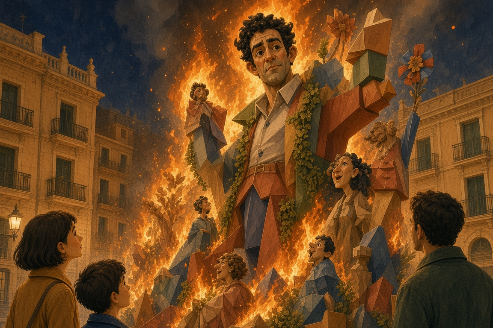

- A2
- Fiestas populares
Un día de Fallas en Valencia
Construyen una figura enorme… y el 19 de marzo la entregan al fuego.
Texto
En marzo fui a Valencia, en España, con mi amiga Lucía. En una plaza vi una figura enorme, de varios metros, con colores vivos. Lucía me explicó: «Es una falla. Los artistas la construyen durante meses. Y el día 19 de marzo, la queman».
Me sorprendió. ¿Construir algo tan grande para después quemarlo? Sí. Las Fallas son una fiesta de Valencia, en honor a San José. Duran varios días, del 15 al 19 de marzo. Por la tarde hay mucho ruido: es la mascletà, una serie fuerte de petardos en la plaza. Por la noche del 19 llega la cremà: el fuego consume las figuras. Las Fallas están en la lista de la UNESCO desde 2016.
Hay una excepción, y esa fue la parte que más me gustó. Cada año, la gente elige un ninot —una figura— y lo salva del fuego. Ese ninot entra en un museo. Esa noche vi las llamas en la plaza. El calor llegó a la cara. Pensé en el trabajo de los artistas y también en el comienzo de la primavera. Yo no conocí esa fiesta antes. Ahora sí: en Valencia, a veces, lo bonito también se entrega al fuego.
